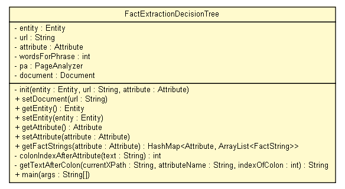

tud.iir.extraction.fact
Class FactExtractionDecisionTree

java.lang.Object
 tud.iir.extraction.fact.FactExtractionDecisionTree
tud.iir.extraction.fact.FactExtractionDecisionTree
public class FactExtractionDecisionTree
- extends java.lang.Object
The fact extraction decision tree creates a DOM of a given mark up and searches for a given attribute
depending on where the attribute is, a decision about the corresponding value will be made.
e.g. whether attribute is in a table or in free text

| Methods inherited from class java.lang.Object |
clone, equals, finalize, getClass, hashCode, notify, notifyAll, toString, wait, wait, wait |
entity
private Entity entity
url
private java.lang.String url
attribute
private Attribute attribute
wordsForPhrase
private int wordsForPhrase
pa
private PageAnalyzer pa
document
private org.w3c.dom.Document document
FactExtractionDecisionTree
public FactExtractionDecisionTree(Entity entity,
java.lang.String url)
FactExtractionDecisionTree
public FactExtractionDecisionTree(Entity entity,
java.lang.String url,
Attribute attribute)
init
private void init(Entity entity,
java.lang.String url,
Attribute attribute)
setDocument
public void setDocument(java.lang.String url)
getEntity
public Entity getEntity()
setEntity
public void setEntity(Entity entity)
getAttribute
public Attribute getAttribute()
setAttribute
public void setAttribute(Attribute attribute)
getFactStrings
public java.util.HashMap<Attribute,java.util.ArrayList<FactString>> getFactStrings(Attribute attribute)
- Run the decision tree and find the string where the fact value for the given attribute is most likely to be found
extract the value and add it to the entity facts (fact values).
- Parameters:
attribute - The initial attribute.
- Returns:
- All strings with the values for the given attribute.
colonIndexAfterAttribute
private int colonIndexAfterAttribute(java.lang.String text)
- Find out whether there is a ":" or "=" after the attribute, which would indicate that the value is after this character.
- Parameters:
text - The search text.
- Returns:
- True if there is such a character, else false.
getTextAfterColon
private java.lang.String getTextAfterColon(java.lang.String currentXPath,
java.lang.String attributeName,
int indexOfColon)
- Move up in the DOM tree until there is text after the ":" or "=".
- Parameters:
text - The search text.
- Returns:
- The text after the colon until the end of sentence.
main
public static void main(java.lang.String[] args)
- Parameters:
args -